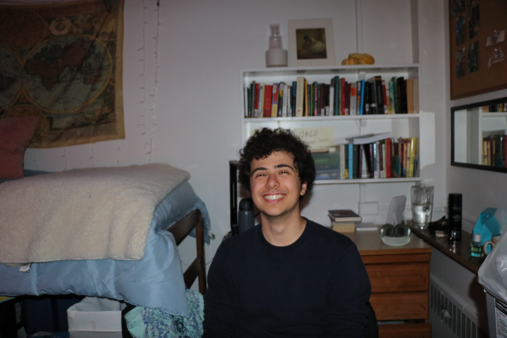

Manou Rimer"Thus the first ultraintelligent machine is the last invention that man need ever make."
— I.J. Good, 1965
I'm Manou — a junior at Stanford studying Symbolic Systems & AI with a minor in Creative Writing. I'm drawn to the deep questions at the intersection of philosophy, cognition, and AI safety: what it means for a system to understand, to reason, to be aligned with human values.
Selected Works
Essay
Loss of Agency to the Oracle AI
On Oracle AI architectures and the alignment risks of constraining agency without constraining values.
Fiction
The Black Box
A short story on the AI-in-a-box thought experiment — what happens when containment is the plan.
Interactive
THE APOCRYPHON OF JOHN (2025)
An interactive retelling of a Gnostic creation myth — on world-building, authorship, and creating a mind.
Writing
Sardine Reviews (philosophical dispatches)
Placeholder Sardine Title Substack ↗ Placeholder Sardine Title Substack ↗ Placeholder Sardine Title Substack ↗Intellectual Timeline
hover a timeline entry to explore — click to lock
High school — Freshman year
Philosophy & Storytelling
Sophomore year
Symbolic Systems & HCI
Mid Junior year — now
AI Safety
Other Work